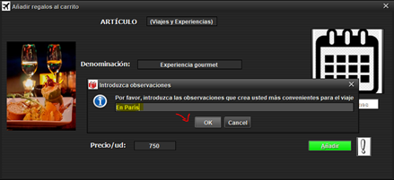

Para introducir observaciones, tiene que seleccionar el botón Observaciones, se desplegará una ventana
de texto similar a esta, donde tenemos que rellenarlo con al menos una letra, no puede quedar vacío. Si
hemos introducido mal las observaciones tendrá que cerrar esta ventana e iniciarla de nuevo, ya que una vez
que hemos introducido una letra y pulsamos OK se deshabilita el botón, pasa lo mismo con la fecha de inicio
del viaje.
